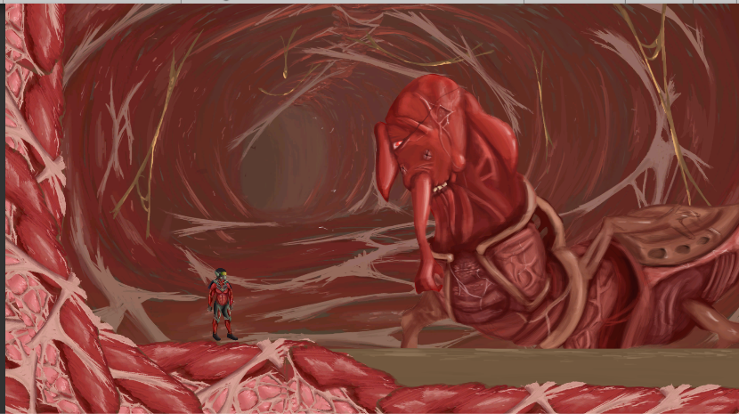
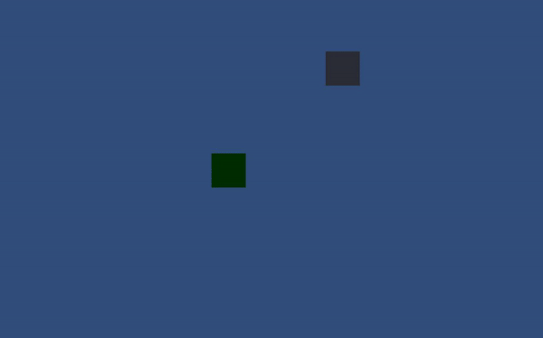
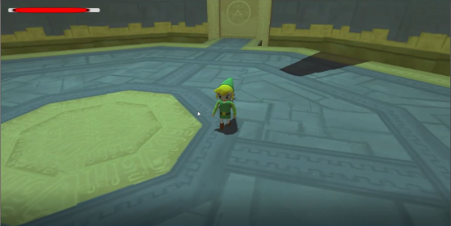
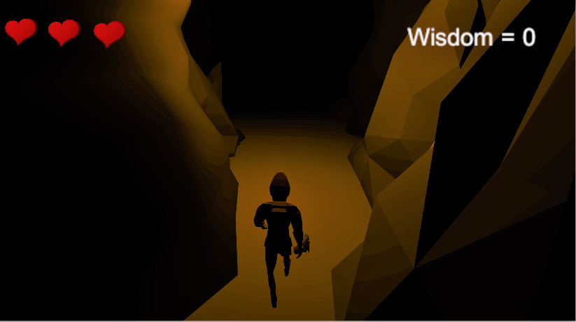

Projects
Main projects
These are the larger projects I have made.
Pale
A follow up project to the 10 second Windwaker project. The point was to make 10 seconds of a game we made up.
Github
Dialogue System
Short demo featuring an npc with some short dialogue.
GithubLink to demo

I've been working on a concept for a project, and one of the things I wanted was a dialogue system. It was fairly difficult getting it just right. Mainly due to having to import a file in order to get the dialogue. Originally I was planning on using a XML file for the dialogue, but a simple TXT file proved to be easier to understand and use. There's still some polishing to be done. I still want to fix some minor bugs going on. But overall I'm very happy with what I got.
Lightsource
Short demo which uses audio to create light. Made with 2 developers
GithubLink to demo
The most difficult part about Lightsource was that we weren't allowed to use Unity. Because of that we jumped from engine to engine for the two weeks. We unfortunately didn't put in enough research about every engine, so because of that we ended up experimenting with engines that couldn't get us what we wanted. After asking around we decided to use javascript, which we both found a pretty tricky language. But after a lot of guidance and help we managed to get what we wanted. And because of it I've learned a lot more about javascript.
Intergalactic Bubbleshooting Fish
The first real proper project I've done. Made with 2 developers and three artists
GithubWe were originally told that we had 3 weeks to finish the project, because of that we spent most of the time on the controls and enemies. When the 3 weeks were done we heard we had an extra 3 weeks. In those 3 weeks we spent more time on the levels. We didn't really work with sprints, rather we decided in the first week what we wanted done in these three week. Of course when we heard we had another 3 weeks to finish the project, we focused on other things. So indirectly we did ended working with sprints. Looking back it's funny to see how different my way of working was compared to now. Not using sprints, leaving in empty functions and using mostly public variables. Still though, I really like this project.
10 Second Windwaker
A project meant to recreate 10 seconds of the Gohdan boss fight from The Legend Of Zelda: Wind Waker. Made with 3 developers and 3 artists.
Github
There were multiple problems with this project, mainly the fact the developers and artists had very little contact with eachother. Our planning was also very flimsy. As we didn't really work in sprints, rather we just chose a certain part of the game to focus about and stick with that. Despite the many flaws we had, we still managed to create something that work. I myself was really happy with the player movement, which was incredibly difficult to do in 3D.
Anansi
A project based of the Anansi myth.
Github
The main issue we had with this project was the merging, all of us had basic knowledge of Github. And because of that every merge started putting the files in other folders or double them.
Personal
About Me

My name is Toon Schaap. Currently I'm following a game development study at MediaCollege. Although, game development isn't the end goal for me. For me, it’s overseeing a game myself, a creative director, if you will. Quite a big goal, I know. So, let me talk about it a bit more.
I’ve always wanted to write stories. Ever since I was really young I made up my own stories when playing a game. Over the years this eventually evolved into me making stories without using an already existing franchise. The problem was that I never considered it as a job, just a hobby. What I was more interested jobwise was game development. I didn’t really understand how video games are made, but because I loved the artform, I wanted to find out how and make it my job. Because of this, I followed the study I’m currently doing, which is game development.
All my coding experience began here. I think coding is still something very difficult. Most of my knowledge came from C# and using Unity. At first I really didn’t want to ask stuff to teachers or look it up, mainly because I considered it cheating in a weird way. But I’m starting to understand that no developer knows everything from the back of their head.
I didn’t really get to experience what I ultimately wanted until the Vertical Slice project came around (A project where we needed to work together with game artists to make 10 second of a game.) Before the project I was still considering becoming a developer the end goal. But during this project I really got the chance to overlook and oversee the creative decisions about this game, together with one other artist in our group. And I absolutely loved it. I loved discussing how to make the game interesting from beginning to end with both the developers and artist. I loved discussing the art style and really making the game pop next to other games with the artists. I loved talking with the developers about the mechanics to keep the game fun yet simple. The final project may have had its flaws gameplay wise, but I was very proud of what we made.
It was this project that made me realize what the end goal really was for me. I started to understand that writing stories and creating worlds, which I considered a hobby, could very much be a thing I could do as a job. Which made me realize that I wanted to focus more on game design. I don’t mind coding, not one bit. In fact when I code something right it usually makes me happy. But I enjoy creating the game concept, thinking about the mechanics and guiding others a whole lot more.
I know the future isn’t going to be easy, quite the opposite. But I know what I want. And I know that when I want something, I’m going to give it my all to get there.